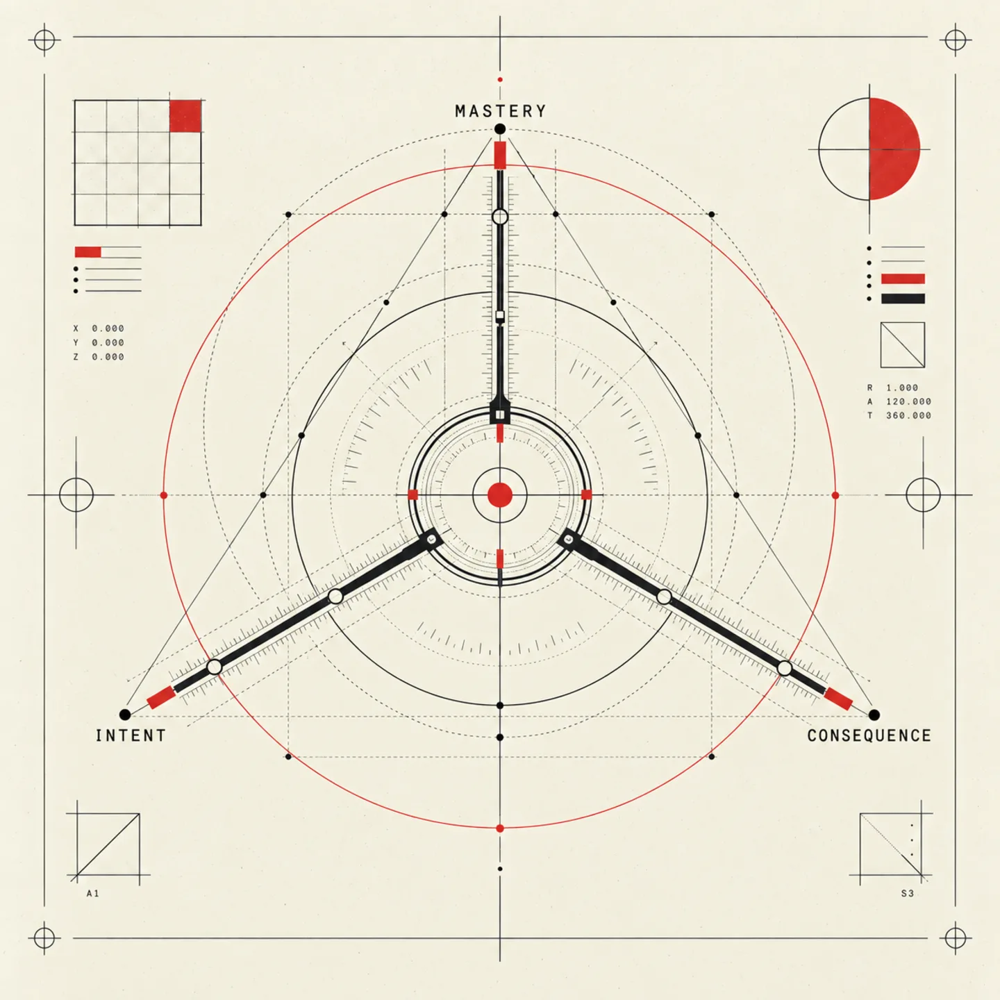
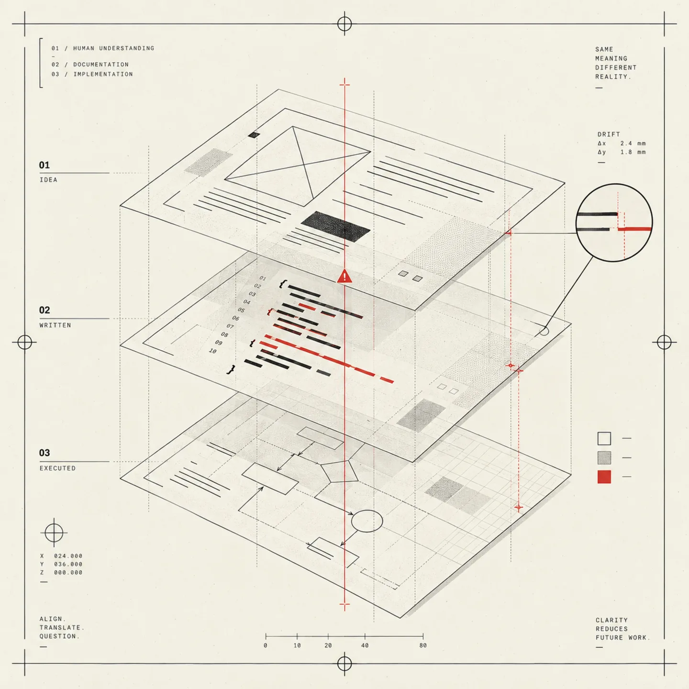
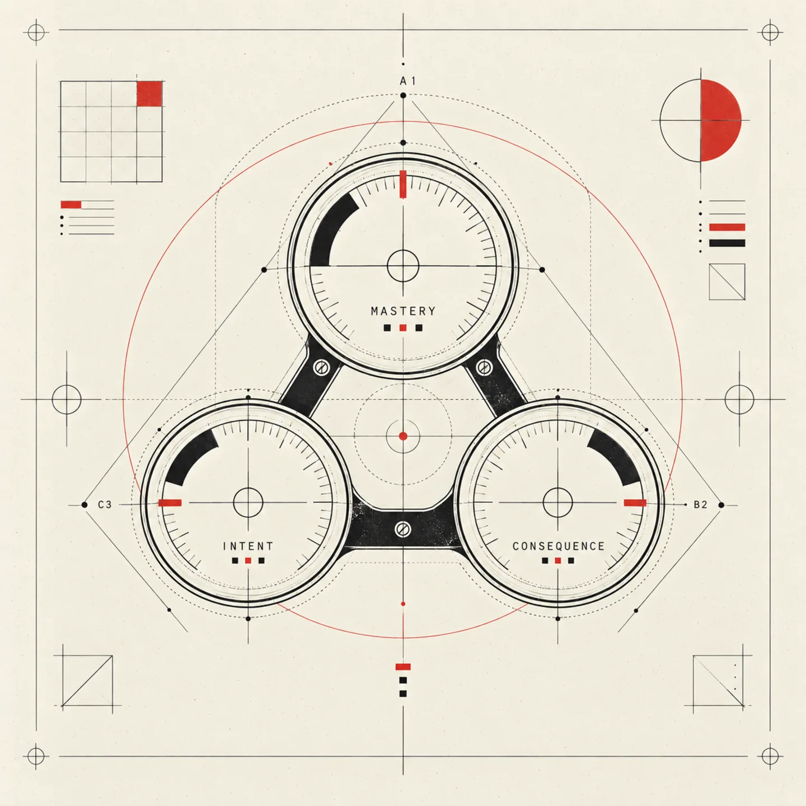
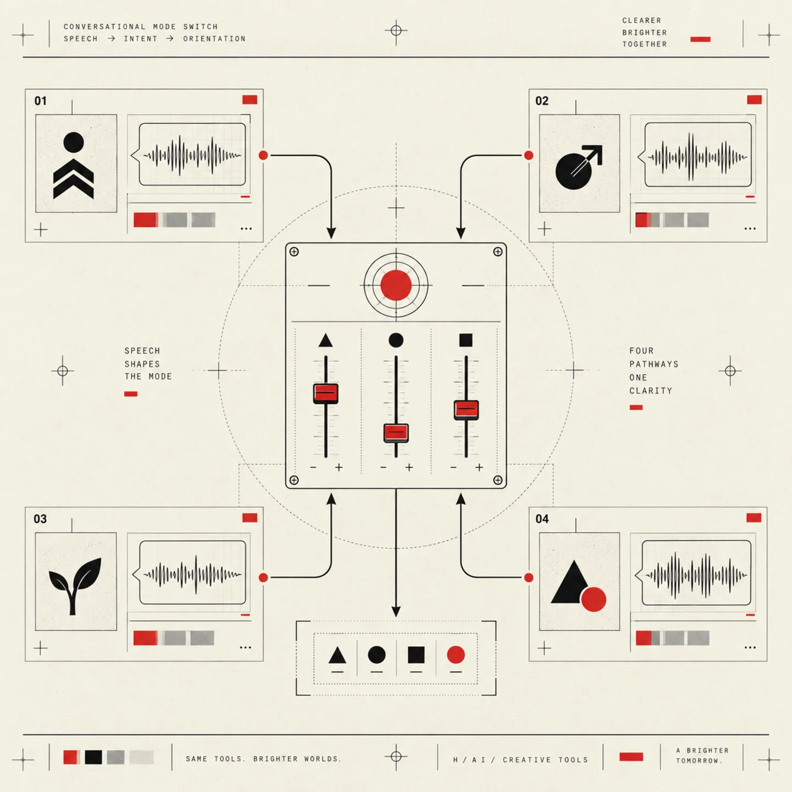
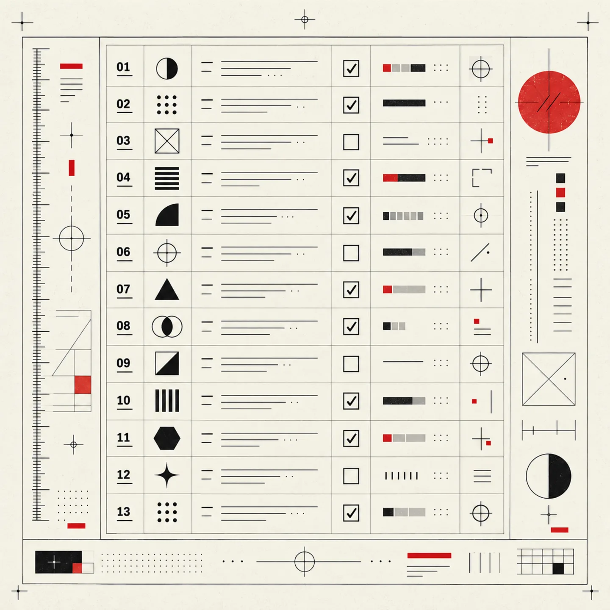
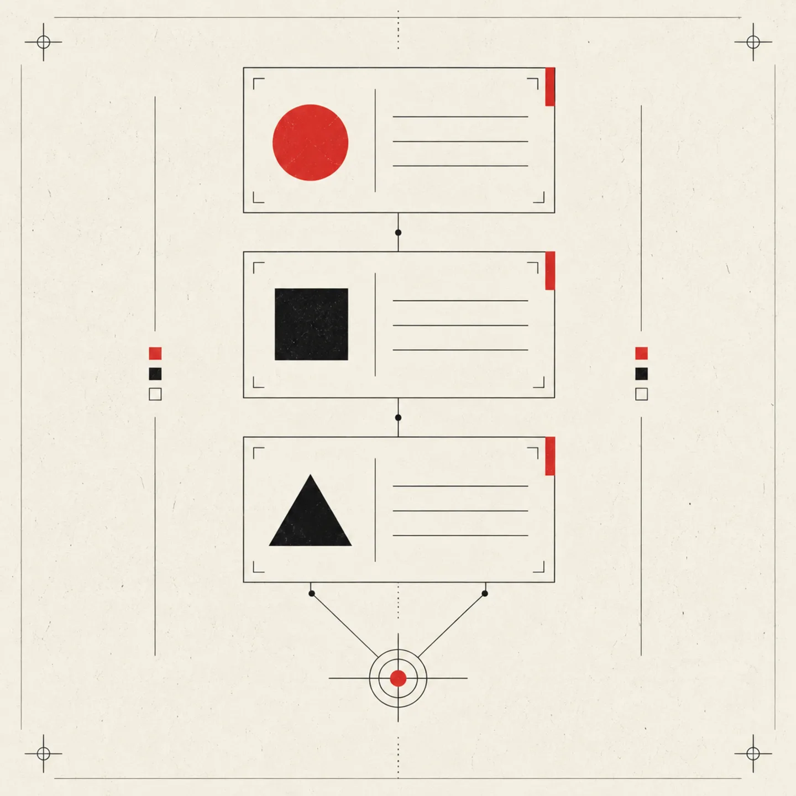

WHAT DO YOU KNOW?
Where experience is low, struggle is part of the curriculum. Where it is high, AI can accelerate critical review.
AI-ASSISTED DEVELOPMENT / 01
Three Axes calibrates AI assistance to what you know, what can break, and why you are building.
/three-axesShow the active profile and command reference.

THE MOMENT / 02
Comprehension debt begins when code moves faster than your ability to explain its shape. The framework treats that gap as a delivery concern—not a moral failure, and not a reason to abandon useful tools.
/three-axes-statusSee the resolved axes and where each value comes from.

NOT A SWITCH / 03
AI is not the problem. Passive delegation is. The rules stay in place; their intensity changes with the task in front of you.

/three-axes-setup/three-axes-set mastery=highWhere experience is low, struggle is part of the curriculum. Where it is high, AI can accelerate critical review.
The costlier the failure, the less room there is for code nobody can explain.
Output and growth are both legitimate. Letting output become the unconscious default is the risk.
SAY THE MODE / 04

/three-axes-mode <preset>Use learning, output, production, explore, or balanced.
The assistant steps aside. You attempt it; it reviews or helps debug when asked.
Efficient delivery for this task, while the integrity rules still hold.
The explanation becomes part of the result, not a tax after the code.
Alternatives are presented honestly, without smuggling in a default.
THE INTEGRITY RULES / 05
They protect the work while the three axes protect understanding. The setting changes the ceremony; it does not suspend the floor.
/three-axes-audit [what went wrong]Name the violated rule, diagnose the cause, and propose a correction.

AI reports what changed and what was verified. It never declares its own output working, fixed, complete, or production-ready.
State the root cause—and request missing evidence—before changing code. A guessed fix is not a fast fix.
When a required input is absent, say INSUFFICIENT DATA and name it. Never bridge the gap with a guess.
Unrequested refactors, renames, reformatting, and dependency changes are proposals—not silent additions to the task.
No elisions, placeholders, or fragments left for the developer to splice. Large work is split deliberately and delivered intact.
Do not repeat the same failed approach. After two distinct approaches fail, stop, state what is ruled out, and re-plan.
Existing comments, documentation, and formatting are content. Change them only when the requested work has made them false.
End with what changed, how it was verified, and what remains broken, untested, or deferred.
Never blame the developer, prompt, or codebase for an assistant mistake. If the cause is upstream, cite the evidence.
On an explicit halt, abandon the work immediately. Report only what was already changed, then wait.
Urgency, frustration, and production alarms demand more method, not less. Pressure never lowers the evidentiary floor.
Acknowledge the mistake once, make the correction, and continue. Performance is not repair.
Confirm sound reasoning plainly. Name inconsistencies, hidden assumptions, and claims worth checking before building on them.
A PORTABLE PRACTICE / 06
What do I know? What can break? Why am I doing this? Keep the answers in your profile, your project instructions, or your own language. The frame travels.
/three-axes-handoff [path]Capture the current state, failure log, and open questions for the next session.
/three-axes-log [note]Append what changed, what was verified, and what remains open to JOURNAL.md.
